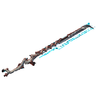

Armes Débutants
Liste des armes utiles / prioritaires si vous ne savez pas quoi choisir et/ou n'avez pas de coup de coeur sur ce que vous avez récolté en chemin. Le MR (Mastery Rank) listé correspond au niveau nécessaire pour y accéder, ce n'est pas indicatif de la puissance des armes. Les armes en gras sont un cran au-dessus des autres.
Les armes de quête sont d'autant plus utiles qu'elles sont fournies avec un catalyste pré-équipé doublant la capacité pour les mods (+ de place) !
- MR 0 :
- Market : Braton, Skana
- Quête : Broken War, Nataruk, Thornbak
- Kitguns :
- Duviri :
- MR 1 :
- Market : Strun
- MR 2 :
- MR 3 :
- Quete :
- MR 4 :
- MR 5 :
- MR 6 :
- Market : Soma
- MR 7 :
- Dojo : Cerata
- MR 8 :
- MR 9 :
- Dojo : Ignis Wraith